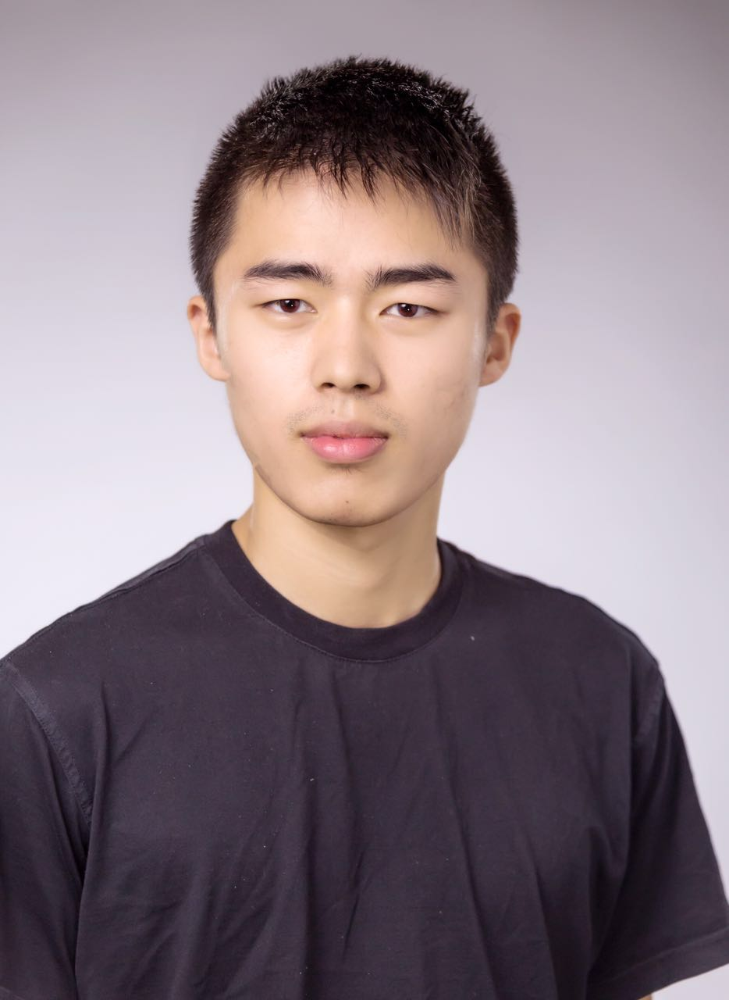

|  |
Qizhe Cai (蔡其哲) Email: qc228 [at] cornell [dot] edu |
I am a final year PhD student in the Department of Computer Science at Cornell University. I am advised by Rachit Agarwal. Before joing Cornell, I got my Master of Science degree in the Department of Computer Science
at Princeton University,
advised by Jennifer Rexford.
I got my Bachelor degree in Computer Science from department of EECS at University of Michigan.
My current research interest is designing and building network stacks/protocols/hardwares for Terabit Ethernet.
I will join the University of Virginia as an assistant professor in the Department of Computer Science in Fall 2025!
[Mar’24] SystemB accepted to OSDI24!
[Dec’23] Harmony accepted to NSDI24!
[May’22] NetChannel accepted to SIGCOMM22!
[May’22] dcPIM accepted to SIGCOMM22!
[Feb’22] Won Meta PhD Fellowship 2022. Thanks to Meta and my colleagues!
[April’21] Understanding Host Network Stack Overheads accepted to SIGCOMM21!
Athinagoras Skiadopoulos, Zhiqiang Xie, Mark Zhao, Qizhe Cai, Saksham Agarwal, Jacob Adelmann, David Ahern,
Carlo Contavalli, Michael Goldflam, Vitaly Mayatskikh, Raghu Raja, Daniel Walton, Rachit Agarwal, Shrijeet Mukherjee, Christos Kozyrakis
In USENIX OSDI 2024
Saksham Agarwal, Qizhe Cai, Rachit Agarwal, David Shmoys, Amin Vahdat
In USENIX NSDI 2024
Qizhe Cai, Midhul Vuppalapati, Jaehyun Hwang, Christos Kozyrakis, Rachit Agarwal
In ACM SIGCOMM 2022
Qizhe Cai, Mina Tahmasbi Arashloo, Rachit Agarwal
In ACM SIGCOMM 2022
Qizhe Cai, Shubham Chaudhary, Midhul Vuppalapati, Jaehyun Hwang, Rachit Agarwal
In ACM SIGCOMM 2021
Jaehyun Hwang, Qizhe Cai, Ao Tang, Rachit Agarwal
In USENIX NSDI 2020
Qizhe Cai, Princeton University, June 2018
Rob Harrison, Qizhe Cai, Arpit Gupta, Jennifer Rexford
In ACM SOSR 2018
SIGCOMM (Amsterdam): Aug 2022 [video]
Alibaba Cloud (virtual): Jan 2023
NPI Retreat(New York): Oct 2019
Cornell System Lunch (Ithaca): Nov 2019
SIGCOMM (Amsterdam): Aug 2022 [video]
SIGCOMM (Virtual): Aug 2021 [video]
Fall 2020: Teaching assistant CS 4450 Introduction to Computer Networkss
Fall 2018: Teaching assistant CS 4321/5321 Practicum in Database Systems
Fall 2017: Teaching assistant for COS 318: Introduction to Operating System
Spring 2017: Teaching assistant for COS 333: Advanced Programming Techniques
Fall 2016: Teaching assistant for COS 318: Introduction to Operating System
Meta Fellowship 2022
Travel Grants: SIGCOMM 2018
James B. Angell Scholar, 2014, 2015, 2016 - University of Michigan
Dean's List, 2013, 2014, 2015 - University of Michigan
University Honors 2012, 2013, 2014, 2015 - University of Michigan
Unversity Honors 2012, 2013, 2014, 2015 - University of Michigan